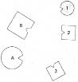
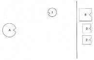
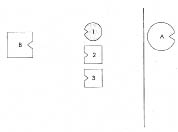
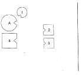

Multiple sklerosis hastası genç bir kadın, grup çalışmasındaki bir hipnoterapi seansı sırasında kendisinin çocukluğunda felçli annesinin yatağının başucunda nasıl diz çöküp “Senin yerine ben, anneciğim” diye karar aldığını gördü. Katılımcılar için çocuğun ana babasını ne kadar çok sevdiğine tanık olmak etkileyici bir deneyimdi. Bunun ardından genç kadın kendisini benliği ve kaderiyle barışık hissetti. Ancak katılımcılar arasında bir kadın, annenin hastalık, acı ve ölümünü üstlenmeye hazır olan bu sevgiye daha fazla dayanamadı. Grup yöneticisine “Ona yardım edebilmeni çok isterdim” dedi. Grup yöneticisi hayretler
içinde kalmıştı. Bu kadın her şeyi mahvetmiş gibi gelmişti ona.
Çünkü kişi, bir çocuğun sevgisini kötü bir şeymiş gibi tedavi etmeye nasıl kalkışabilirdi ki. Bu şekilde çocuğun ruhunu hasta etmez, acısını hafifletmek yerine daha kötü bir hale sokmaz mıydı? Çocuk bu şekilde annesine sevgisini daha da fazla gizleyerek korumaz, umuduna ve bir kez aldığı, annesini kendi acısıyla kurtarma kararına daha da sıkı sarılmaz mıydı?
Buna başka bir örnek vereyim. Yine bir multiple sklerosis hastası genç bir kadın bir grup çalışması sırasında grup üyelerinin yardımıyla köken ailesini dizerek etkili olan ilişki örgüsünü gösterdi. Dizimde annesinin solunda babası yer alıyordu. Onların karşısında en büyük çocuk olarak danışan, onun solunda on dört yaşında kalp yetmezliğinden ölen erkek kardeşi, kardeşinin de solunda en küçük erkek kardeşi sıralanmıştı.
1. Resim

B Baba
A Anne
1 En büyük çocuk, kız (=Danışan)
2 On dört yaşında kalp yetmezliğinden ölen ortanca çocuk, erkek
3 En küçük çocuk, erkek
Grup yöneticisi ölen erkek kardeşin temsilcisini dışarı gönderdi; bu böyle bir dizimde ölüm anlamına geliyordu. Temsilci dışarı çıkar çıkmaz kızın yüzü birden aydınlandı, annesi de kendisini çok daha iyi hissetti. Grup yöneticisi, varolan eğilimi fark ederek en küçük kardeşi, ardından da babayı da dışarı gönderdi. Bütün erkekler dışarı çıktığında -yani öldüklerinde- anne bir zafer duygusuyla doğruldu. Her ne nedenle olursa olsun ölmesi gerekenin kendisi olduğu duygusunu taşıdığı anlaşılmıştı. Başkalarının ölümü onun yerine üstlenmeye hazır ve istekli oluşlarının onu ne kadar rahatlattığı ortadaydı.
2. Resim

Grup yöneticisi daha sonra erkekleri geri çağırıp anneyi dışarı gönderdi. Bir anda hepsi annenin kaderine ortak olma yükümlülüğünden kurtulmuş ve iyi hissettiler kendilerini.
3. Resim

Ancak grup yöneticisi kızın multiple sklerosis hastalığının da annenin ölüm yükümlülüğüyle ilişkili olduğundan kuşkulanmıştı. Bu nedenle anneyi geri çağırarak babanın soluna, kızı da annenin yanına yerleştirdi.
4. Resim

Kıza, anneye sevgiyle bakarak, gözleri gözlerinde, yüzüne karşı “Anneciğim, bunu senin için yapıyorum!” demesini söyledi. Bunu söylerken bütün yüzü aydınlanan kızın hastalığının anlamı ve amacı bütün katılımcıların gözünde açıktı artık.
Burada bir hekim ya da ruhsal bakıcı ne yapabilir ya da neden korunmak zorundadır?